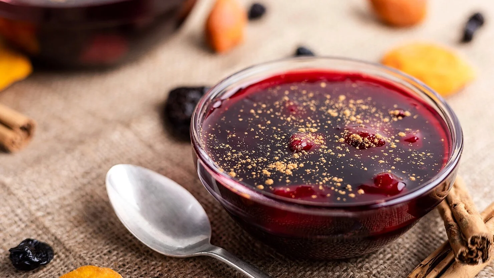

Tarta de manzana
Ingredientes:
- 2 manzanas
- 1 taza de harina
- 1/2 taza de azúcar
- 1/4 taza de mantequilla
- 1 huevo
Pasos
- Precalentar el horno a 180°C.
- Pelamos y cortamos las manzanas en rodajas finas.
- En un bol, mezclamos la harina, el azúcar, la mantequilla derretida y el huevo hasta obtener una masa homogénea.
- Extendemos la masa en un molde para tarta y colocamos las rodajas de manzana encima.
- Horneamos durante 30-35 minutos o hasta que la tarta esté dorada y cocida por dentro.
Tip/Consejos:
Consejo 1
Para una tarta más jugosa, puedes agregar un poco de leche o crema en la masa.
Consejo 2
Si prefieres una tarta más esponjosa, puedes usar un poco de levadura en la masa.
Consejo 3
Para una tarta más rica, puedes agregar un poco de canela o vainilla en la masa.
Consejo 4
Si la tarta se quema por fuera antes de que esté cocida por dentro, cubre con papel de horno para evitar que se queme.
Galletas De Gengibre
Ingredientes:
- 3 tazas de harina
- 1/2 taza de mantequilla
- 1/2 taza de azúcar moreno
- 1/4 taza de melaza o miel oscura
- 1 huevo
Pasos
- Pre-calentamos el horno a 180°C.
- Mezclar la mantequilla con el azúcar y la melaza hasta que quede cremoso.
- Añadir el huevo y batir bien.
- Incorporar la harina poco a poco hasta formar una masa (agrega especias: 2 cdta jengibre en polvo, 1 cdta canela).
- Estirar la masa, cortar formas y hornear 8-12 minutos hasta que estén firmes.
Tip/Consejos:
Consejo 1
Para una masa más suave, puedes agregar un poco de leche o crema en la mezcla.
Consejo 2
Si la masa es muy dura, puedes agregar un poco de agua tibia para suavizarla.
Consejo 3
Para una masa más esponjosa, puedes agregar un poco de levadura en la mezcla.
Consejo 4
Si las galletas se queman por fuera antes de que estén cocidas por dentro, cubre con papel de horno para evitar que se quemen.
Crema Volteada
Ingredientes:
- 1 lata de leche condensada (397 g)
- 1 lata de leche evaporada (400 ml)
- 5 huevos
- 1 cucharadita de esencia de vainilla
- 1 taza de azúcar (para el caramelo)
Pasos
- Precalentar el horno a 180°C.
- Preparar caramelo: calentar el azúcar con un poco de agua hasta dorado y verter en el molde.
- Mezclar leche condensada, evaporada, huevos y vainilla hasta integrar bien.
- Colar la mezcla y verter sobre el caramelo en el molde.
- Hornear a baño maría 45-60 minutos hasta firme. Enfriar y refrigerar antes de voltear.
Tip/Consejos:
Consejo 1
Usa baño maría para que quede suave y sin grietas.
Consejo 2
No batas fuerte para evitar burbujas de aire.
Consejo 3
Deja enfriar completamente antes de desmoldar para que no se rompa.
Consejo 4
Agrega ralladura de limón para un toque más fresco y peruano.
Mazamorra Morada

Ingredientes:
- 500 g de maíz morado seco
- 1 taza de azúcar (o al gusto)
- 4 cucharadas de maicena
- Frutas secas (pasas, ciruelas) y piña fresca
- Canela, clavo y cáscara de limón
Pasos
- Hervir maíz morado con agua, canela, clavo y cáscara de limón 45-60 min.
- Colar el líquido morado y desechar restos.
- Agregar azúcar, frutas secas y piña, hervir 10 min más.
- Disolver maicena en agua fría y agregar para espesar removiendo.
- Dejar enfriar y servir fría o tibia (ideal con arroz con leche).
Tip/Consejos:
Consejo 1
Hirve a fuego medio para extraer bien el color morado intenso.
Consejo 2
Agrega más frutas si quieres versión más cargada de sabor.
Consejo 3
Espesa solo al final para que quede suave, no dura.
Consejo 4
Sirve con arroz con leche encima para el combo clásico peruano.
Alfajores
Ingredientes:
- 2 tazas de harina de maicena
- 1 taza de harina común
- 200 g de mantequilla
- ½ taza de azúcar glas
- Manjar blanco (dulce de leche) para rellenar
Pasos
- Batir mantequilla con azúcar hasta cremoso.
- Agregar harinas y formar masa suave (no amasar mucho).
- Estirar masa, cortar círculos y hornear a 180°C 10-12 min (no dorar mucho).
- Dejar enfriar completamente.
- Untar manjar blanco entre dos galletas y espolvorear azúcar glas o coco.
Tip/Consejos:
Consejo 1
Enfría la masa 30 min antes de cortar para formas perfectas.
Consejo 2
Hornea poco tiempo para que queden blanditas, no duras.
Consejo 3
Usa manjar blanco casero o comprado para relleno rápido.
Consejo 4
Espolvorea coco rallado en los bordes para versión clásica.
Arroz con Leche
Ingredientes:
- 1 taza de arroz (perla o arborio)
- 4 tazas de leche entera
- 1 lata de leche condensada
- Canela en rama y polvo
- Cáscara de limón o naranja
Pasos
- Cocinar arroz en agua con canela y cáscara hasta absorber.
- Agregar leche entera y cocinar a fuego bajo removiendo.
- Incorporar leche condensada y seguir hasta cremoso (20-30 min).
- Retirar del fuego y dejar entibiar.
- Espolvorear canela en polvo y servir tibio o frío.
Tip/Consejos:
Consejo 1
Remueve constante para que no se pegue ni forme costra.
Consejo 2
Usa arroz de grano corto para que quede más cremoso.
Consejo 3
Agrega pasas o canela extra al final para más sabor.
Consejo 4
Combínalo con mazamorra morada para el clásico peruano.
Picarones
Ingredientes:
- ½ kg de camote (o mezcla con zapallo)
- 2 tazas de harina
- 1 cucharada de levadura fresca
- ½ taza de azúcar
- Miel de chancaca (chancaca + agua + canela + clavo)
Pasos
- Cocer camote/zapallo hasta suave y machacar, dejar enfriar.
- Mezclar con harina, levadura disuelta y azúcar hasta masa suave.
- Dejar reposar 1 hora hasta que suba.
- Freír porciones en forma de anillo en aceite caliente hasta dorados.
- Servir calientes bañados en jarabe de chancaca espeso.
Tip/Consejos:
Consejo 1
Usa camote amarillo para color y sabor más auténtico.
Consejo 2
La masa debe quedar pegajosa; no agregues mucha harina extra.
Consejo 3
Fríe a fuego medio para cocer por dentro sin quemar.
Consejo 4
El jarabe: hierve chancaca hasta espeso pero no duro.
Cupcakes de Chocolate
Ingredientes:
- 200 g de harina todo uso
- 150 g de azúcar
- 2 huevos
- 100 g de mantequilla (o 80 ml de aceite)
- 120 ml de leche + 1 cucharadita de esencia de vainilla
Pasos
- Precalentar el horno a 180°C y preparar moldes para cupcakes con pirotines.
- Batir mantequilla (o aceite) con azúcar hasta cremoso.
- Añadir huevos uno a uno y batir bien, luego la vainilla.
- Agregar harina alternando con leche hasta obtener masa homogénea.
- Llenar moldes ¾ y hornear 18-22 minutos hasta que al pinchar salga limpio.
Tip/Consejos:
Consejo 1
Ingredientes a temperatura ambiente para mejor textura esponjosa.
Consejo 2
No sobrebatir la masa después de agregar harina para no endurecerlos.
Consejo 3
Agrega chips de chocolate o cacao en polvo para versión chocolate.
Consejo 4
Deja enfriar completamente antes de decorar con frosting o crema.
Tarta de Galletas
Ingredientes:
- 2 paquetes de galletas María (o similares, ~400 g)
- 1 litro de leche
- 1 lata de leche condensada (397 g)
- 100 g de chocolate para postres (para cobertura)
- 100 ml de nata o crema para montar
Pasos
- Preparar crema: mezclar leche condensada con parte de la leche y espesar si hace falta (o usar natillas preparadas).
- Mojar ligeramente las galletas en leche restante y armar base en molde.
- Agregar capa de crema sobre las galletas.
- Repetir capas de galletas mojadas y crema hasta terminar.
- Derretir chocolate con nata, cubrir la tarta y refrigerar 4 horas o toda la noche.
Tip/Consejos:
Consejo 1
Moja las galletas solo un segundo para que no se deshagan mucho.
Consejo 2
Agrega canela o ralladura de limón a la leche para sabor más peruano.
Consejo 3
Usa molde desmontable para desmoldar fácil y presentar bonito.
Consejo 4
Decora con galletas trituradas o frutas encima antes de servir frío.